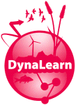
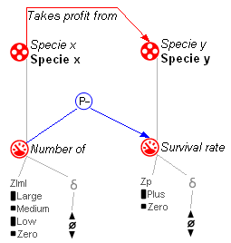
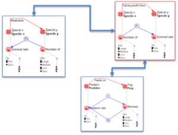
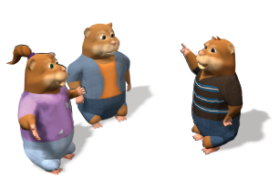

")
")
DynaLearn
El conocimiento conceptual sobre el comportamiento de los sistemas es crucial para que la sociedad comprenda e interactúe mejor con su entorno. La adquisición de dicho conocimiento es un aspecto valioso de la educación científica. DynaLearn (entorno de aprendizaje interactivo para el conocimiento conceptual de sistemas) tiene como objetivo apoyar la adquisición del conocimiento conceptual en el contexto del aprendizaje de las ciencias medioambientales, mediante la combinación de:
- Técnicas de razonamiento cualitativo
- Técnicas semánticas
- Animación de personajes virtuales
Se utilizan representaciones gráficas para que los alumnos articulen, analicen y comuniquen ideas, y por lo tanto construyan su conocimiento conceptual.

Se utilizan técnicas de ontology mapping (mapeo entre ontologías) para identificar y poner en relación a diferente estudiantes que trabajen en ideas similares, proporcionando oportunidades de aprendizaje individualizadas y beneficios mutuos.

Se utilizarán personajes virtuales para hacer la interacción atractiva y motivadora.

Visita la web del proyecto DynaLearn para más información.
Rol de la UPM en DynaLearn
UPM participa en todas las actividades relacionadas con las tecnologías semánticas dentro del sistema DynaLearn. En concreto, hay tres tareas principales en que la semántica desempeña un papel importante:
- Grounding. Los usuarios elegirán la terminología involucradas en su modelo de vocabularios bien formados (ontologías), para facilitar su interoperabilidad, así como para la facilitar la creación de un conocimiento común de dominio.
- Feedback (realimentación) basado en ontologías. Validación de modelos mediante el estudio de su similitud con ciertos modelos estándar (mediante técnicas de ontolgy mapping).
- Recomendación. El filtrado colaborativo para la obtención de recomendaciones subjetivas basadas en la comunidad de usuarios; así como recomendaciones basadas en las propiedades del modelo desde un punto de vista estructural y objetivo.
Participantes
Las personas de la UPM involucradas en el desarrollo del proyecto DynaLearn son:
Publicaciones y otros resultados
Las publicaciones más recientes son:
- Liem, J., Beek, W. and Bredeweg, B. (2010). Multi use level workbench. DynaLearn, EC FP7 STREP project 231526, Deliverable D3.1.
- Mioduser. D. (ed.), Salles, P., Noble, R., Zitek, A., Benayahu, Y., Zurel, D., Leiba, M., Zuzovsky, R. and Nachmias, R. (2010). Lessons and assignment schemata. DynaLearn, EC FP7 STREP project 231526, Deliverable D7.1.
- André, E., Bühling, R., Bee, N., Wißner, M. and Häring, M. (2009). Models and basic animations for characters. DynaLearn, EC FP7 STREP project 231526, Deliverable D5.1.
- Bredeweg, B. (ed.), André, E., Bee, N., Bühling, R., Gómez-Pérez, J.M., Häring, M., Liem, J., Linnebank, F., Thanh Tu Nguyen, B., Trna, M. and Wißner, M. (2009). Technical design and architecture.DynaLearn, EC FP7 STREP project 231526, Deliverable D2.1.
- Salles, P., Assumpção Costa e Silva, P., Gontijo de Sá, I., Noble, R., Zitek, A., Uzunov, Y. and Mioduser, D. (2009). DynaLearn environmental science curriculum requirements. DynaLearn, EC FP7 STREP project 231526, Deliverable D6.1.
La lista completa de entregableas disponibles puede consultarse en el siguiente enlace.
Publicaciones más recientes:
- Bert Bredeweg, Jochem Liem, Floris Linnebank, René Bühling, Michael Wißner, Jorge Gracia del Río, Paulo Salles, Wouter Beek, Asunción Gómez Pérez . "DynaLearn: Architecture and Approach for Investigating the Acquisition of Conceptual System Knowledge for Ill-defined Domains", In Proc. of Tenth International Conference on Intelligent Tutoring Systems (ITS 2010), Pittsburgh, Pennsylvania, USA, June 2010.
- Bredeweg, B., Gómez-Pérez, A., André, E. and Salles, P. (2009). DynaLearn - Engaging and Informed Tools for Learning Conceptual System Knowledge. Cognitive and Metacognitive Educational Systems (MCES2009). Pirone. R., Azevedo, R. and Biswas, G. (eds.), pages 46-51, AAAI Fall Symposium, Arlington, Virginia USA, 5-7 November, Technical report FS-09-02, AAAI Press.
La lista completa de publicaciones disponibles se puede consultar en el siguiente enlace.
Información adicional
- Fecha de inicio: 01/02/2009
- Fecha de finalización: 31/12/2011
- Presupuesto global del proyecto: 3.193.495 €
Ofertas de trabajo
Actualmente, no hay ninguna oferta de trabajo o becas disponibleas para este proyecto. Para ofertas en otros proyectos o áreas de investigación, visite la sección ofertas de trabajo.
No obstante, puede contactar con Asunción Gómez-Pérez para comprobar si hay posibles ofertas en un futuro cercano.

Created under Creative Commons License - 2015 OEG.